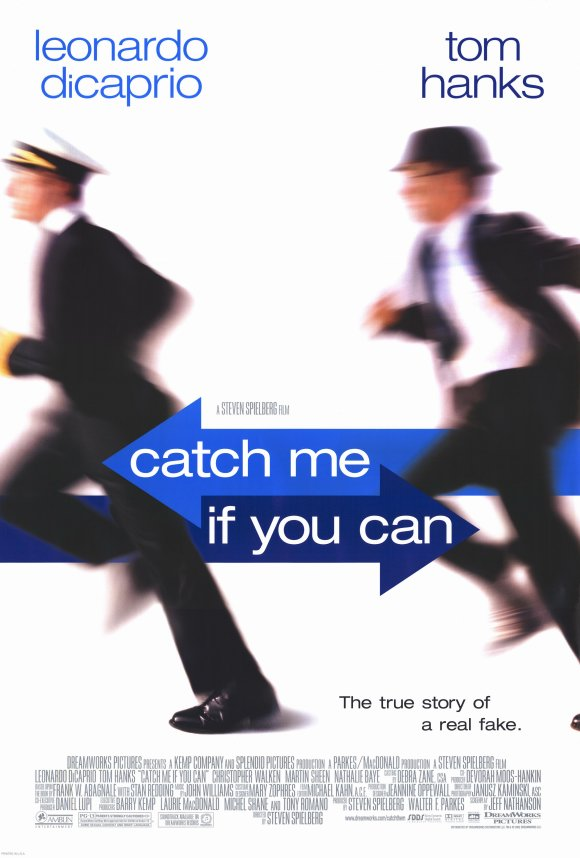
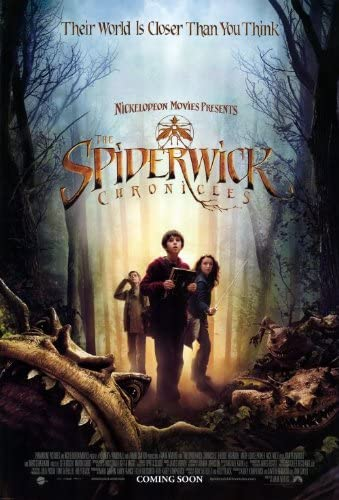
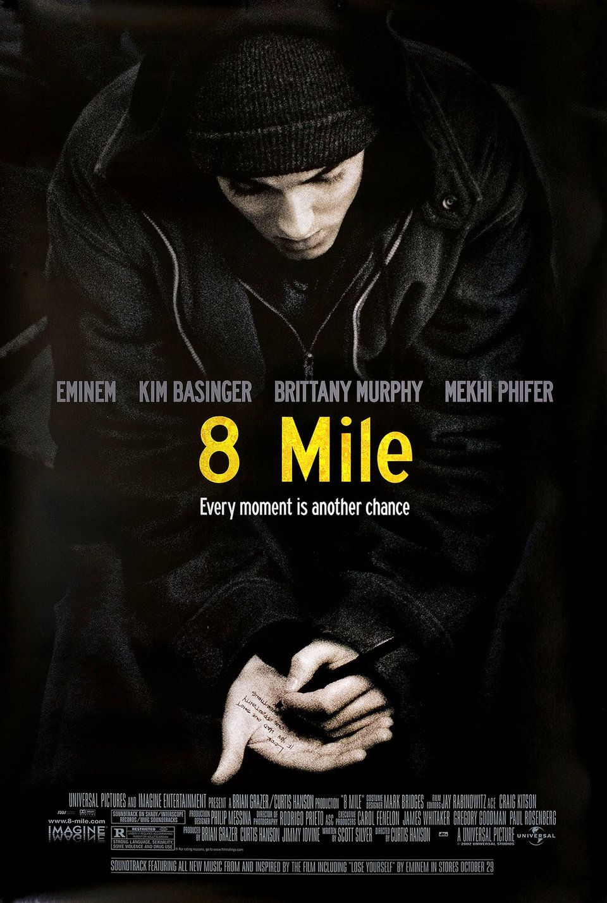

My Top 10 Favorite Movies
1. The Notebook

A poor yet passionate young man falls in love with a rich young woman, giving her a sense of freedom, but they are soon separated because of their social differences.
2. V for Vendetta

In a future British tyranny, a shadowy freedom fighter, known only by the alias of "V," plots to overthrow it with the help of a young woman.
3. Avenger's Endgame

After the devastating events of Avengers: Infinity War (2018), the universe is in ruins. With the help of remaining allies, the Avengers assemble once more in order to reverse Thanos' actions and restore balance to the universe.
4. Catch Me If You Can
Barely 21 yet, Frank is a skilled forger who has passed as a doctor, lawyer and pilot. FBI agent Carl becomes obsessed with tracking down the con man, who only revels in the pursuit.
5. Kingsman: The Secret Service

A spy organisation recruits a promising street kid into the agency's training program, while a global threat emerges from a twisted tech genius.
6. The Spiderwick Chronicles
Upon moving into the run-down Spiderwick Estate with their mother, twin brothers Jared and Simon Grace, along with their sister Mallory, find themselves pulled into an alternate world full of faeries and other creatures.
7. Your Name
Two teenagers share a profound, magical connection upon discovering they are swapping bodies. Things manage to become even more complicated when the boy and girl decide to meet in person.
8. 8 Mile
A young rapper, struggling with every aspect of his life, wants to make it big but his friends and foes make this odyssey of rap harder than it may seem.
9. The Equalizer

A man who believes he has put his mysterious past behind him cannot stand idly by when he meets a young girl under the control of ultra-violent Russian gangsters.
10. Joker

In Gotham City, mentally troubled comedian Arthur Fleck is disregarded and mistreated by society. He then embarks on a downward spiral of revolution and bloody crime. This path brings him face-to-face with his alter-ego: the Joker.